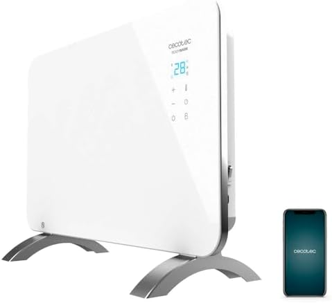

Calefactor para el baño: cuál es seguro cerca del agua y cuál no
El baño es la habitación más fría de casa por la mañana y la más peligrosa para meter un aparato eléctrico. Se puede templar en cinco minutos, sí, pero eligiendo bien. Esto es lo que dice la norma y lo que dice el sentido común.</p>
La escena es familiar: sales de la ducha en enero, el suelo helado, la toalla fría, y el impulso es llevar el calefactor del salón un rato al baño. Muchos calefactores no son seguros en un cuarto de baño, aunque nada en la caja lo diga con claridad. Antes de comprar uno con esta idea en mente, hay que mirar dos siglas y una distancia.
Qué significa IPX4 (y por qué te importa)
La clasificación IP mide la resistencia de un aparato eléctrico al polvo (primer número) y al agua (segundo). En un baño solo interesa el segundo. Un aparato IPX0 no está protegido; uno IPX4 aguanta salpicaduras desde cualquier dirección, que es lo que puede pasar en un baño real: gotas al secarte, salpicaduras al abrir la mampara, condensación en el aire.
- IPX0 o sin IP indicado: uso en habitaciones secas. En un baño, no.
- IPX1: aguanta gotas verticales. Insuficiente.
- IPX2: gotas cayendo con la carcasa hasta 15 grados de inclinación. Insuficiente.
- IPX4: salpicaduras desde cualquier dirección. Es el mínimo razonable para el baño.
- IPX5 o superior: aguanta chorros de agua. Más de lo que necesitas, pero mejor pasarse que quedarse corto.
La mayoría de calefactores domésticos —cerámicos, radiadores de aceite, emisores— no llevan protección IPX4. Están pensados para dormitorios y salones. Meterlos al baño no es una infracción si respetas las distancias de la norma, pero tampoco es una buena idea.
Las distancias que exige la norma española
El Reglamento Electrotécnico de Baja Tensión divide el baño en volúmenes con distintos niveles de exigencia. Simplificando lo que interesa a un usuario:
- Dentro de la bañera o el plato de ducha (volumen 0): no puede haber nada eléctrico salvo aparatos IPX7 diseñados específicamente para ese uso.
- Justo encima de la bañera o ducha, hasta 2,25 m de altura (volumen 1): solo calentadores de agua y aparatos IPX4 mínimo, alimentados por circuito de muy baja tensión de seguridad.
- Zona alrededor de la bañera o ducha, hasta 60 cm (volumen 2): pueden ir aparatos IPX4 fijos alimentados desde fuera del volumen 2.
- Más allá de 60 cm de la bañera o ducha: se pueden usar aparatos domésticos normales, respetando enchufe con toma de tierra y diferencial.
Traducido: si el baño es pequeño y no puedes poner el calefactor a más de 60 cm de la ducha o del lavabo, necesitas un aparato IPX4 sí o sí. Si tienes un baño grande y hay espacio para meter el aparato en un rincón alejado, se puede usar un cerámico normal siempre y cuando esté en un enchufe protegido por diferencial (todo enchufe doméstico moderno lo está).
Lo que sí funciona sin obra
Termoventilador cerámico compacto en el rincón alejado
Un cerámico pequeño, bajo, con termostato y —muy importante— con antivuelco, colocado a más de 60 cm de la ducha, resuelve el problema los cinco minutos que necesitas antes de meterte a ducharte o al salir. Se conecta directamente al enchufe de pared (nunca alargador ni ladrón), se enciende diez minutos antes y se apaga al salir.
El Pro Breeze Mini Cerámico 2000W (37,99 €) pesa 1,8 kg, oscila, tiene termostato y antivuelco. Es el ejemplo típico de calefactor de baño usado con cabeza: se guarda en un cajón y se enchufa solo cuando hace falta (verlo en Amazon).
Si buscas algo más económico para un baño muy pequeño, el Jata TC73 Cerámico 1200W (31,90 €) es aún más compacto y silencioso, aunque con 1200 W tarda algo más (verlo en Amazon).

Toallero eléctrico
El toallero eléctrico bajo consumo es probablemente la solución más elegante, aunque requiere instalación fija. Se coloca en pared, se conecta al circuito del baño y funciona a baja potencia constante para tener la toalla templada y quitar el frío ambiente. No calienta el baño de golpe, pero mantiene una temperatura razonable si lo dejas encendido.
Como en cualquier alquiler no se puede taladrar, el toallero queda para casa propia.
Estufa de cuarzo apuntando desde fuera
Una estufa de cuarzo colocada en el pasillo, con la puerta del baño abierta y apuntando hacia dentro, calienta por radiación sin que el aparato entre al cuarto húmedo. No es una solución elegante, pero funciona y evita cualquier riesgo eléctrico.
Lo que no hay que hacer
- Radiador de aceite en el baño: los modelos domésticos no son IPX4 y no están pensados para ambientes húmedos. Además pesan mucho y no se mueven fácilmente para uso puntual.
- Estufa halógena vertical con base plana en un baño con niños o mascotas: las carcasas se calientan mucho y hay riesgo de vuelco al secarse.
- Alargador o ladrón para conectar el calefactor: nunca. Dos mil vatios superan la capacidad segura de los alargadores baratos.
- Dejar el calefactor encendido con la puerta cerrada durante la ducha. La condensación del vapor sobre las rejillas de un aparato eléctrico caliente es exactamente lo que hay que evitar.
- Colgar la toalla encima del calefactor. En un cerámico bloquea el flujo de aire, en cualquier calefactor sube el riesgo de incendio.
Rutina que funciona
- El cerámico se enciende cinco minutos antes de meterte a la ducha, con la puerta del baño cerrada. En ese rato el aire pasa de estar helado a tener 18-20 °C.
- Se apaga y se saca al pasillo antes de abrir el grifo. Nunca conviven vapor de ducha y calefactor encendido en el mismo espacio.
- Al salir de la ducha, si sigue haciendo frío, se enciende de nuevo. Ya no hay vapor y el calor se aprovecha.
- Cuando acabes, guardar el aparato en un cajón hasta el día siguiente. No dejarlo enchufado.
Es una rutina de treinta segundos que evita el 99 % de los problemas y templa el baño con cinco minutos de consumo.
Cuánto cuesta usarlo así
Un cerámico de 2000 W encendido diez minutos al día son 0,33 kWh: unos seis céntimos a la tarifa media del kWh en España. Al mes, entre 1,50 y 2 euros. Es de las medidas de confort más baratas que se pueden aplicar en invierno.
Si vives en zonas donde el invierno es duro y usas el baño varias veces al día, puede subir a diez o quince euros al mes. Sigue siendo más barato que subir el termostato del piso entero para que el baño esté a temperatura razonable.
Si tu baño es grande
En un baño amplio y con presupuesto, un panel radiante colocado a más de 60 cm de la zona de agua da un ambiente más agradable que un termoventilador ruidoso. El Cecotec Ready Warm 6650 Crystal Connection (79,90 €) es un panel de cristal templado de 1000 W que se puede colocar de pie con las patas incluidas, se enciende con wifi o mando desde la cama y es completamente silencioso. Para un baño grande, cumple (verlo en Amazon).
Eso sí: en un baño típico de 3 o 4 m², un cerámico de 2000 W es más eficaz que un panel de 1000 W, porque calienta antes.
Regla rápida
Baño pequeño con la ducha a menos de 60 cm de cualquier rincón: cerámico compacto, encendido 5 minutos, guardado en un cajón. No hace falta invertir 80 € en un aparato específico si el problema es de diez minutos al día.
Productos mencionados en esta guía
Pro Breeze Mini Calefactor Cerámico 2000W
37,99 €
Jata TC73 Calefactor Cerámico 1200W
31,90 €
Cecotec Ready Warm 6650 Crystal Connection
79,90 €Precios orientativos, consultados en Amazon. Pueden cambiar en cualquier momento.